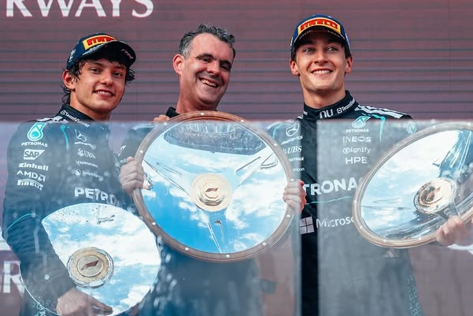
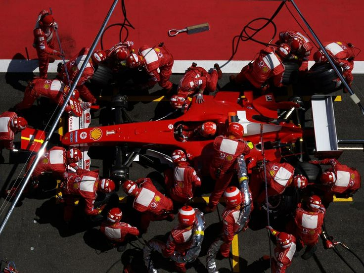
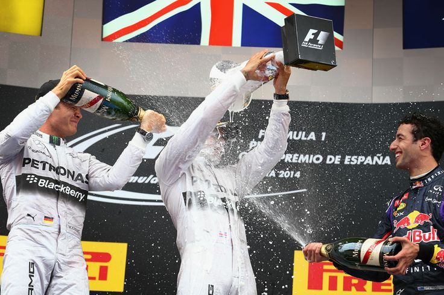
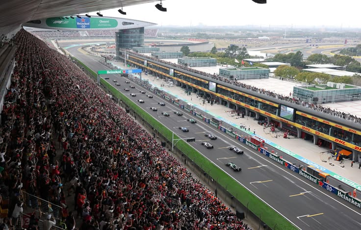
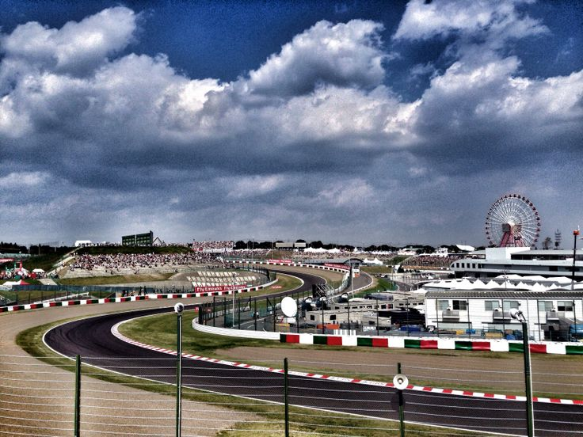

Round 01Platform analitik Formula One terlengkap — live timing, telemetri, strategi pit stop, dan sorotan balapan dari seluruh musim.
Race Leader
VER 44
Gap to P2
+3.2s
Pantau posisi setiap mobil, kecepatan di setiap sektor, dan data ban langsung dari pit wall — dalam hitungan milidetik.
Simulasikan skenario pit stop optimal, analisis window undercut, dan prediksi finishing position berdasarkan data degradasi ban.
Explore Strategy →
APEX F1 menghadirkan data yang sama yang digunakan tim-tim papan atas — kini tersedia langsung di tangan para penggemar setia Formula One di seluruh dunia.
"Ini seperti memiliki akses ke garasi tim sendiri. Saya bisa melihat setiap keputusan strategi secara real-time."

"To Finish First, First You Have To Finish."
Toto Wolff
Team Principal & CEO, Mercedes-AMG Petronas F1
Ikuti semua perkembangan terbaru — dari hasil kualifikasi, drama pit lane, hingga analisis mendalam pasca-balapan.

Round 01
Round 02
Round 03